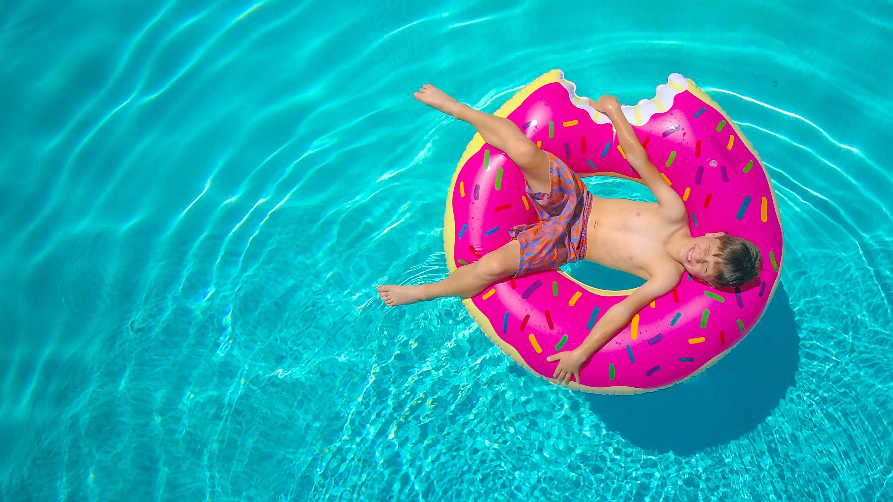

À propos

Notre mission
De nombreux accidents surviennent encore chaque année malgré les systèmes de sécurité en place (alarmes qui dysfonctionnent, couvertures et bâches laissées ouvertes…). La mission de Guardia est de tout mettre en œuvre pour éviter les noyades dans les piscines.
Notre expertise
Grâce à notre expertise en intelligence artificielle, nous avons conçu une alarme innovante qui se fond dans les habitudes de ses utilisateurs.
Le cœur de notre expertise est notre technologie de détection sophistiquée qui utilise des capteurs et des algorithmes d'intelligence artificielle avancés pour surveiller en permanence les mouvements et les activités autour de la piscine. En cas de détection d'une situation potentiellement dangereuse, notre système déclenche immédiatement une alerte sonore pour avertir les adultes de la présence d'un danger.
Guardia, une startup lyonnaise
Guardia est une startup lyonnaise, accompagnée par la French Tech Saint-Étienne — Lyon et BPI France, et labellisée Lyon Start Up.
Ils parlent de nous
Tribune de Lyon

Nos partenaires